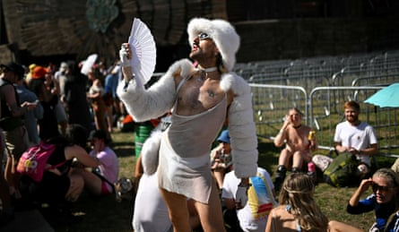
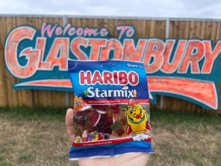

Shaving your armpits is very ageing
It was such a hot debate in the 90s, whether a feminist should shave her armpits. On the one hand, didn’t it speak of a profound unease in your own skin, the result of internalised patriarchal oppression, that you’d want to parade a hairlessness that everyone knew was fake, in order to satisfy a male gaze that fundamentally didn’t want to deal with the messy reality of you? And yet, on the other hand, wasn’t it so much neater and more feminine? Decisions, decisions. We argued a lot but shaved our pits anyway. Then the world moved on without us, and nobody does this any more. The worst thing is, if you’ve shaved your pits for long enough, they won’t grow back; like a metaphor for lost youth, made of hair.
Skimpy: the new style byword
Bimini rocking the skimpy look.Photograph: Jonny Weeks/The Guardian
Drag icon and activist Bimini was wearing a red, white and blue bustier, fishnets, hot pants and 12in heels when they made their final adjudication on festival style: “Skimpy. Look, see what I mean?” They then pointed at someone in the crowd who was wearing a bra and shorts, and looked quite surprised to be singled out. “Skimpy, skimpy, skimpy.”
Generally speaking – and no offence, surprised crowd-member – it’s not enough to get dressed, take off one layer and then go out; you have to mix it up a bit. Regular trousers with the arse removed; panels cut out to reveal random segments of hamstring; vest tops rolled up on one side. The vibe is Flintstone or fetish, your call.
What became of brat summer ?
Charli xcx on the Other stage.Photograph: Ben Birchall/PA
This time last year, the spirit of Charli xcx seemed to herald a new spirit of rebellion and devil-may-care among young women specifically, all women generally, and actually, hell, all people. An awesome amount of time was spent explaining to each other what a “brat” was – she had ladders in her tights and didn’t wash her hair, except on a Wednesday; if she got drunk in the morning, it was because that’s what she’d decided; she was never waiting for anyone’s call. It was anti-consumerist, anti-wellness, anti-pilates, an emancipation from bullshit. If it had all been a flash in the pan, that would have been quite sad.
Charli ceremonially burned the green brat curtain at the end of her set, and the homemade brat merch in the crowd has thinned out. But Charli xcx ain’t going nowhere – she’s like herself times a thousand.
Everyone has one celebrity they’ll break for
If I saw someone famous, I would leave them in peace, up to the point of pretending not to notice who they were. I’d never ask for a selfie, I’d never tell them how much they’d meant to me and insert some heartfelt detail, I’d try not to even poke the person I was with and say, “ Look, it’s so-and-so,” because, in the end, the celeb is a person, not a zoo animal. They always have to find some way to match your surprise and enthusiasm, which just isn’t possible. Plus they’ll have recently come off stage, and likely be way too hot.
Zoe Williams with Justin Fletcher, AKA CBeebies’ Mr Tumble.Photograph: Zoe Williams
So I thought, anyway. Then I saw Mr Tumble, fresh out of the CBeebies House Party, and I had to tell him he’d saved the 2010s for me, and I had to get a selfie, even though I was so overexcited that it only has my ear in it.
Calling something ‘secret’ is the best way to guarantee that everyone immediately knows what it is
Stick in a band called “Patchwork” and everyone knows it’s Pulp. News of an unscheduled Lewis Capaldi show will go round faster than measles in a post-facts autocracy. Sometimes the details get a bit lost, so a “secret” Fat Dog set will become the rumour of a “secret” appearance by Wet Leg – don’t go to the rumour mill for accuracy. But the minute the mill grinds into gear, it will not rest until everyone, everywhere, knows everything. The information age has created a desperate appetite for intel that was not freely given up. No one ever asks whether it’s any more special than all the other intel.
Fluffy hats are major
Fluffy hat and fan at the Temple stage.Photograph: Oli Scarff/AFP/Getty Images
As Jarvis Cocker said, 30 years and four days after he first played this festival, Glastonbury is bigger than any of us. It is an entity, and it is alive. And, like any living thing, sometimes it spawns a stupid idea, which you just have to hope doesn’t spread. This year, imagine a bucket hat, made of fake fur, probably pink.
How to share sunscreen in a wholesome way
Don’t rub it in on a stranger and look like a creep; don’t try to discuss their sunscreen needs and look as though you’re trying to make friends in the most boring possible way. If you see the back of a neck going a bit red, just spray them and be on your way.
A less-often-mentioned side-effect of a late night
As the queue for coffee snaked endlessly across the grass, the barista explained that nobody’s face ID was working because they were all too hungover.
Nothing anyone says about Kneecap is going to stop people liking Kneecap
Kneecap at the West Holts stage.Photograph: David Levene/The Guardian
No amount of “whither political civility?” will do it, no casual or strident dismissals of their viewpoint. I decline to extrapolate from this anything about public opinion on issues besides Kneecap. Let’s just leave it at: people really like Kneecap .
Headscarves are a self-conscious performance of dowdiness
You’ve got to wonder what you’re trying to say with this Betty Draper cosplay, which even Gracie Abrams was spotted in. Do you have to cover your head because your hair is too beautiful to look at directly, and your modesty too pronounced? Are you about to engage in some agricultural labour?
I unlocked the mystery of the Pringles SuperMario mystery flavour
Solid pickled onion on the front taste, and any idiot could get that; followed by a chilli kick, which in the Pringle universe goes by the generic “spicy”. Whether or not this is what Mario and Luigi would have wanted is anyone’s guess.
Puppets are back
If you saw it on a flyer, you’d think: nah. Oversized sheep’s head atop a real person’s head, so they look like a sheep, but not very much like one? Nah, I’m good. Little Sooty-and-Sweep-style hand puppets, peeking over the top of the DJ booth? I can live without those.
If your name’s not down, you’re not coming in … one of Cosmic Slop’s puppets at Glastonbury.Photograph: David Levene/The Guardian
But you only think you can live without that, friend. Nobody knows why, but when they appear, puppets add an incomprehensible amount of gaiety.
If you’re wearing an Arsenal shirt, don’t be surprised if Arsenal fans try to engage you in conversations about Arsenal
That’s part of the point! You’re not supposed to be wearing it just for the colourway.
Stone circles are not all that
Third or maybe 30th-hand, I heard the story of a guy whose girlfriend was Egyptian, and she’d never heard of Stonehenge. He showed her a picture of it, thinking she must have seen it and not remembered its name, and her response? “Your ancestors were small and weak.” Hun, you think Stonehenge is not all that, you should see the stone circle at Glastonbury. And yet the hippies are all over it.
A cowboy craze doesn’t have to have a meaning
People might just be wearing the boots because they’re flattering, the hats because it’s hot, and the tasselled jackets to complete the look, and it might just be coincidence that everyone is doing that at the same time. However, let’s say that it isn’t, and there’s a deeper message: it’s that everyone wishes Beyoncé was here.
A festival is the perfect place to field test the hierarchy of Haribo
Haribo … but do they love it so?Photograph: Matt Fidler/The Guardian
Everyone thinks Starmix is the main Haribo; for years, we’ve all been sitting here thinking: “It’s weird, I don’t like them, they have a spongy texture, underwhelming flavour spectrum and insufficient interest, but other people must like them, because they’re the main Haribo.” This is completely wrong. If you leave a range of the popular sweets in a populated office space, as I did at Glastonbury, this is the order in which they disappear; Nostalgix; Tangfastics; Giant Strawbs; Strips; Supermix; Happy Cola. Starmix comes a solid last.
BuzzBallz are not just for children
Neon-coloured plastic balls of booze that taste like a cocktail of battery acid and squash – I’ve asked family members before who drinks these things, and the answer is always: people whose fake ID is so amateurish it only works in a corner shop. But this is not so! They are amazingly well-designed for drinking on the move, especially if you want to play catch beforehand.
Rod Stewart has gone over to the dark side
The gnarly pop rocker stunned everyone in 2023 when he announced that not only had he fallen out of love with the Tories, he’d go one further and give Labour a go. All eyes were on Stewart this year, to see if anything in his swagger would indicate whether he was still team Starmer or had reverted to his true blue roots. Two days before his legend slot, he blew the suspense by coming out in favour of Nigel Farage. Which is … a worry, I guess?
C-bombs are no longer exploding
OK, fine, I’m old, but I remember when you’d never say “cunt”, even if you regularly thought it, without first checking that your interlocutor would be OK with it. I was there when it was thought of as possibly misogynistic. I can definitely recall a time when you might think the word, you’d be medium sure your companion also thought it, but you wouldn’t say it out loud in case you sounded a bit unboundaried. Those days are apparently well and truly over. Between the T-shirts, the fans and the flags, this no longer seems to be one of the strongest words in the language.
Everyone’s wearing Spice Girls T-shirts
Brat girl power … Stuart, 34, from London and Ben, 35, from Liverpool.Photograph: Alicia Canter/The Guardian
Mel C was the only IRL sighting of a Spice Girl at Glastonbury, but they were all there in spirit, owing to the surprising amount of – what would you call it? – heraldry all over the place.
Urinals for women are all very well …
… and equality is great, but: when you see how much engineering and overdesign has to go into pretending standing up to wee is a good idea, it feels like a metaphor about adapting to the patriarchy.
Find another way to ask: ‘Are you OK?’
You think you’re being concerned and nice, and you probably don’t mean anything by it. In your head, it might have a jaunty upwards inflection: “You OK, all well in your world?” To the hearer, however, it can sound like anything : are you angry, are you on the brink of a nervous breakdown, are you the most hungover you’ve been in your life, are you on the level, are you reliable? Find something else to say. A simple “how are you?” works well.
It’s annoying to obsess over your step count
There is a lot of step chat at Glastonbury, but come on. You’re in a big place, where things are far away from each other, and there aren’t any buses. Obviously you walked a lot.
Forget the wet wipes, remember the parasol
Members of Gathering Voices wander the Circus Fields, armed with parasols.Photograph: Guy Bell/Shutterstock
People go on so much about portable hygiene, and nobody ever mentions that you’ll use precisely three wet wipes, and then you’ll forget about them for a year, and – pro tip – whatever happens, you will never come back from any camping experience going”: “Thank God for those wet wipes.” A parasol, on the other hand, is the difference between you and that idiot who’s in A&E right now.
Tallying up the full cost of a classic Glastonbury is pretty bracing
After some epic inflation, a ticket is now £373.50 plus a £5 booking fee, up from £225 a decade ago. Travel is going to be a hundred quid unless you live in one of the surrounding villages; food bargains do exist but only if you think £6 for a bag of nachos is a bargain; and there is no way on earth you’re getting into the festival spirit, which is to say drunk, with change from £50. It’s an £800 long weekend, which is hardly a newsflash, but it does mean that acts like Faye Webster , with more of a teenage following, are underpopulated. Is it unreasonable to mourn a time when more young people could afford to come? Am I being nostalgix?